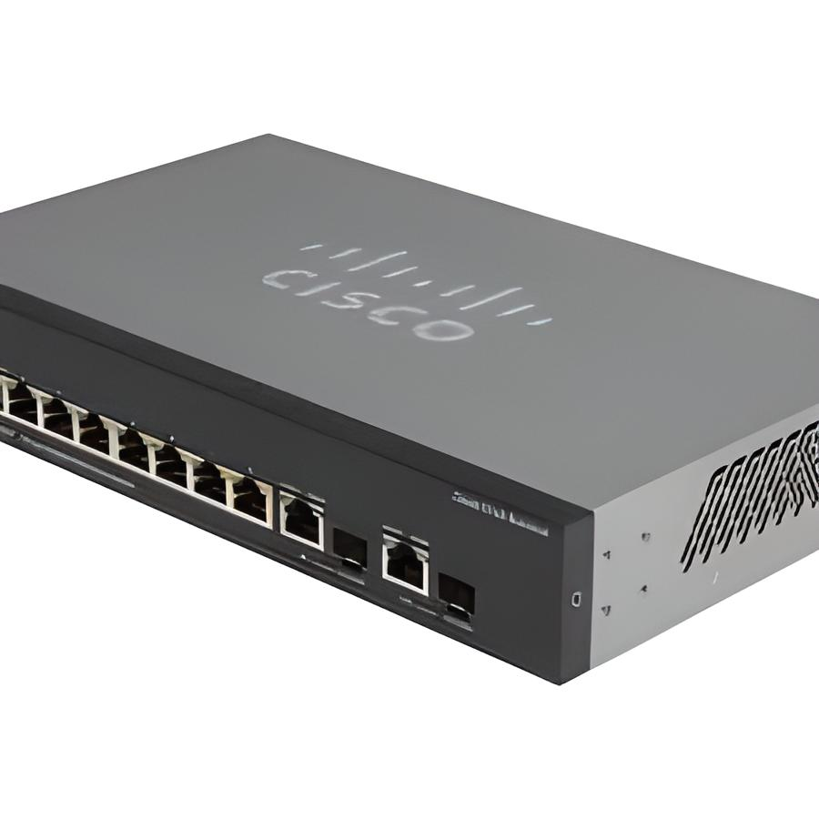

Un ejemplo de mecanismo de protección de los datos de una organización es una red perimetral la cual se define como el límite seguro entre las redes de la nube y las redes de los centros de datos locales o físicos. De igual forma permite la conectividad segura hacia internet y desde esta.
Este mecanismo consiste en una serie de medidas de seguridad que propician un acceso seguro a la red. Estas medidas deben ejecutarse antes de que los paquetes de información entrantes lleguen al back-end. Algunos ejemplos de las medidas mencionadas son el firewall, los sistemas de detección de intrusiones, los sistemas de prevención de intrusiones, enrutadores fronterizos, subredes protegidas. Los paquetes que se generen dentro de la red deben pasar igualmente en estas aplicaciones de seguridad con el objetivo de evitar que cualquier ataque o intrusión pueda afectar a la red de la empresa. El flujo anterior tiene fines de auditoría, inspección y aplicación de directivas.
De igual forma otro de los mecanismos de protección son la implementación de protocolos en los procesos de protección de la red, como lo puede ser la implementación de redes virtuales, rutas definidas por el administrador de red, entre otras. Estos protocolos son configurados en los dispositivos participantes dentro de una red.
Para el caso de las redes virtuales, estas pueden habilitarse y configurarse en los switches de una red, los switches de Cisco permiten hacer esta clase redes en las cuales se hospedan los distintos tipos de servicio con filtrado e inspección del tráfico hacia o desde internet mediante NVA, firewalls de aplicaciones web como Azure Firewall o aplicaciones de monitoreo en la red como Security Onion.
Las rutas definidas por el usuario se usan comúnmente para enrutar el tráfico de red a través de las aplicaciones de seguridad mencionadas anteriormente para la aplicación de directivas de límites de seguridad, es decir, se previene que la comunicación tome caminos por los cuales se pueda evadir la seguridad y no se realicen de forma adecuada los procesos de inspección para mantener protegida a la red.
Para conocer más acerca de las redes perimetrales te recomendamos mirar el siguiente video: